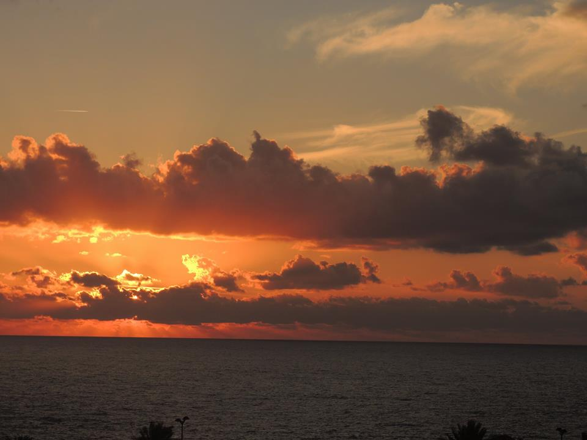
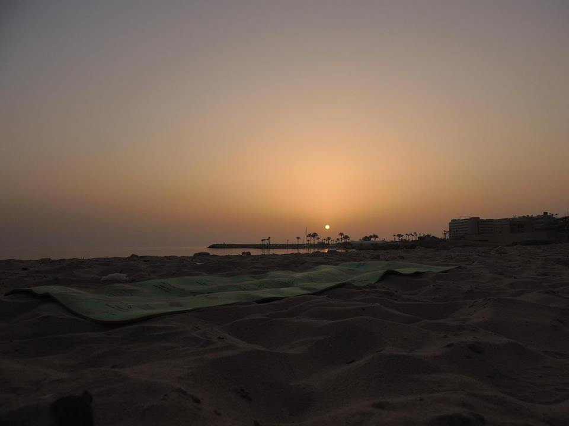
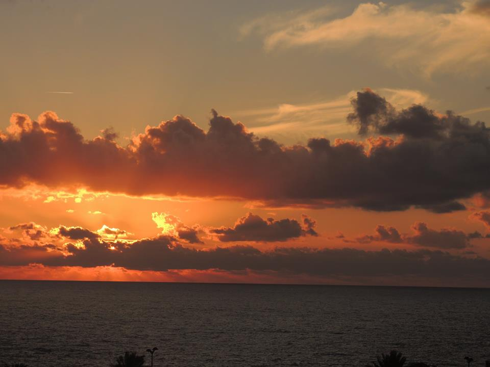
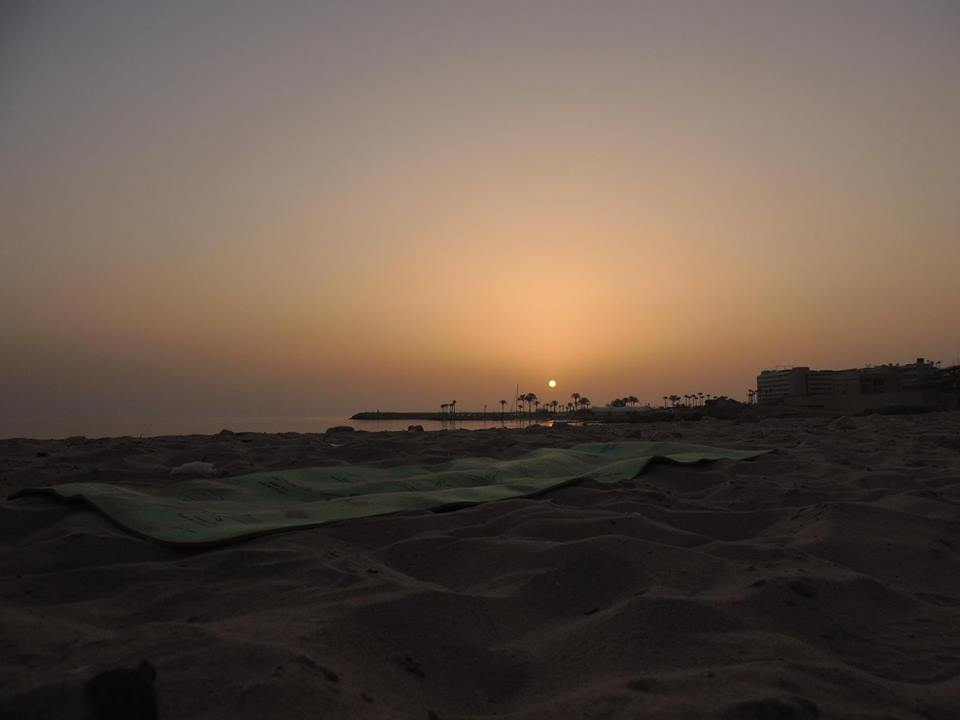
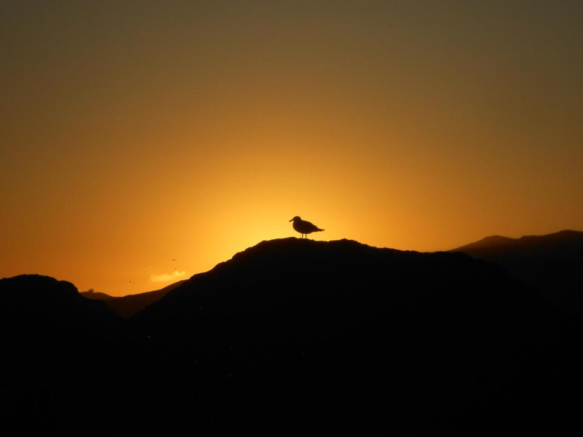
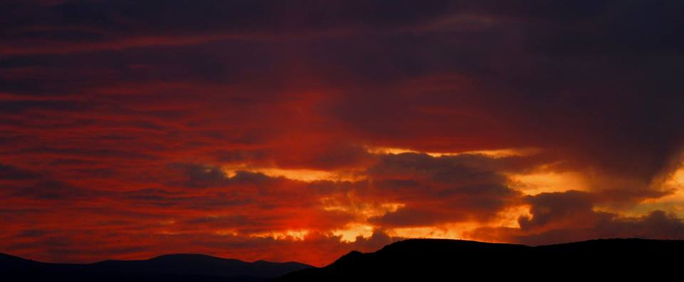

The following three photos were shot during my one month visit to Abu Dhabi, UAE in 2013.
Sunset from the City I most adore and the closest to my heart.
 



Sunset love off the Mediterranean Sea coming out of Lebanon!
Jiyeh in the south
Baabda Forest, east of Beirut
From Baabda, overlooking Beirut and the Meditarranean
Byblos, Jbeil in the North
Jounieh, just north of Beirut
Jiyeh in the south
Marina Dbayeh, just the other side of Beirut. While cycling!
Niha in the Chouf, Mount Lebanon
Saadiyet, about 25 km south of Beirut
Ain Saada Hills, just the top of the hill east of Beirut
Tripoli, the Capitol of North Lebanon
Here are a couple of photos of the sunset off the Arabian Sea in Cochin, Kerala, India. One of the most peaceful and romantic sunsets I've ever experienced! Just amazing and mesmerizing in many different forms and shapes!
Now we move to the second place I adore and that is the California Coast, particularly the notrthern part of it!
Berkeley
Sunset and the Seagull near the Berkeley Marina
Petaluma in the North Bay
Bodega Bay
Santa Barbara
San Francisco and Golden Gate Bridge

San Francisco near the Marina
San Francisco and Gull
While running Near Bodega Bay
The photos were shot while driving from Las Vegas to San Francisco
This is by no means a comprehensive list of the sunset shots I have taken. More is yet to come!